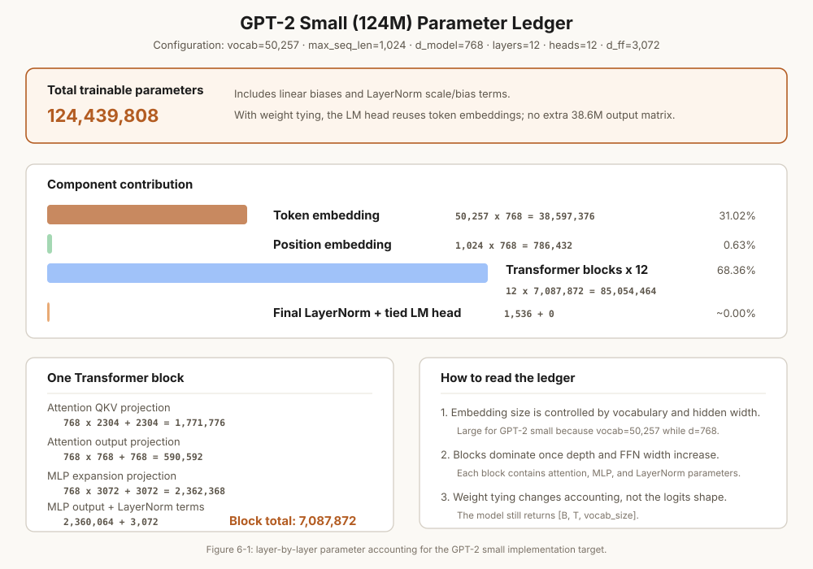

第6章 组装完整 GPT 模型
GPT-2 124M 从头实现 + DeepSeekMoE 稀疏激活架构
本章怎么学：先完成一条前向传播链路
token ids -> logits。DeepSeekMoE 是容量扩展案例，第一次学习可以先完成 GPTModel 主线，再回来看路由器。- 前置知识：Embedding、causal self-attention、GPT-2 Block、线性层输出 logits。
- 学习目标：把 tokenizer、embedding、block、LM head 串成完整 GPT 前向传播，并能分析参数量、初始化、weight tying 和 MoE 路由。
- 课前阅读：阅读 GPT-2 论文模型结构部分和 nanoGPT 的 config/model 代码，标注每个超参数如何影响 shape。
- 课后阅读：阅读 Switch Transformer/DeepSeekMoE 的稀疏激活动机，比较 dense FFN 与 MoE 的容量、通信和负载均衡问题。
- 本章产出：一个能接收 token 序列并输出下一 token logits 的 GPTModel。
- 完成标准：你能解释
logits.shape == [batch, seq, vocab_size]为什么是语言模型的最终输出。 - 练习产出：提交 GPTModel forward 测试、参数量逐项表、weight tying 验证和一次小 batch logits sanity check；配套作业见 assignments/ch06_gpt/。
6.1 GPT-2 架构全景——从 token ID 到 logits 的完整数据流
经过前 5 章的积累，我们终于可以将所有组件组装成一个完整的 GPT 模型。GPT-2 small (124M) 的架构可以用三个主要阶段概括：
- Embedding 阶段：Token Embedding + Position Embedding → 将离散 token ID 映射为连续向量
- 计算阶段：12 层 Transformer Block 堆叠 → 逐层变换表示
- 输出阶段：Final Norm + LM Head → 将隐藏状态映射为词表概率分布
GPT-2 与后续模型的关键区别
- 绝对位置编码：GPT-2 使用可学习的 Position Embedding（1024 个位置 × 768 维），而非 RoPE。RoPE 是 Llama、DeepSeek 等后续模型使用的
- LayerNorm with bias：GPT-2 在每个 Block 中使用带 bias 的 LayerNorm（不是 RMSNorm）
- GELU 激活：GPT-2 的 FFN 使用 GELU，不是 SwiGLU
- Weight Tying：GPT-2 共享 Embedding 和 LM Head 的权重
在后续章节中，我们将看到这些设计选择如何被后续模型逐一改进。

图 6-1: GPT-2 Small (124M) 参数逐层分解
6.2 编程练习 1：定义 GPTConfig 数据类
在构建模型之前，先用一个配置类封装所有超参数。这是 ML 工程中的标准实践——将所有可配置参数集中管理，便于实验和复现。
🖥️ 练习 1：GPTConfig 数据类
任务：用 @dataclass 定义 GPTConfig，包含 GPT-2 small (124M) 的所有超参数。
要求：
vocab_size: int = 50257— GPT-2 BPE 词表大小max_seq_len: int = 1024— 最大序列长度d_model: int = 768— 隐藏层维度n_heads: int = 12— 注意力头数n_layers: int = 12— Transformer Block 数量d_ff: Optional[int] = None— FFN 中间维度（默认 4*d_model）dropout: float = 0.1— Dropout 概率bias: bool = True— 线性层是否使用 bias（GPT-2 用，Llama 不用）tie_weights: bool = True— 是否共享 Embedding 和 LM Head 权重
# 预期用法
config = GPTConfig()
print(f"GPT-2 124M 配置: vocab={config.vocab_size}, d_model={config.d_model}, "
f"layers={config.n_layers}, heads={config.n_heads}")
# 可以快速切换不同配置
gpt2_medium = GPTConfig(d_model=1024, n_heads=16, n_layers=24)
gpt2_large = GPTConfig(d_model=1280, n_heads=20, n_layers=36)
6.3 编程练习 2：组装完整的 GPTModel
现在使用 GPTConfig 和 GPT-2 风格组件来组装完整的 GPTModel。注意：若目标是精确复现 GPT-2 small 的 124M 参数量，Block 必须使用 LayerNorm + GELU MLP + 带 bias 的线性层；第 5 章的 RMSNorm/SwiGLU Block 是现代 Llama/DeepSeek 风格，不能直接用于 GPT-2 参数精算。
🖥️ 练习 2：GPTModel 组装
任务：实现 GPTModel——完整的 GPT-2 模型。
要求：
token_embedding: nn.Embedding(vocab_size, d_model)pos_embedding: nn.Embedding(max_seq_len, d_model)blocks: nn.ModuleList包含n_layers个GPT2Block（LayerNorm + causal self-attention + GELU MLP）norm: nn.LayerNorm(d_model)（最终输出归一化）lm_head: nn.Linear(d_model, vocab_size, bias=False)- 可选的 Weight Tying：如果
tie_weights=True，设置lm_head.weight = token_embedding.weight _init_weights：Linear 层用 N(0, 0.02) 初始化，Embedding 用 N(0, 0.02)，bias 初始化为 0forward(input_ids)：返回(batch, seq_len, vocab_size)的 logits
# 预期用法
config = GPTConfig()
model = GPTModel(config)
input_ids = torch.randint(0, config.vocab_size, (2, 64))
logits = model(input_ids)
assert logits.shape == (2, 64, config.vocab_size)
# 梯度流通
loss = logits.sum()
loss.backward()
print(f"模型参数: {sum(p.numel() for p in model.parameters()):,}")
print("前向 + 反向传播通过 ✓")
6.4 深度理论：Weight Tying——哪些模型用，哪些不用，为什么？
Weight Tying（权重共享）让嵌入层（Token Embedding）和输出层（LM Head）共享同一个权重矩阵。直觉：嵌入层"读入"token 的含义，LM Head"输出"token 的分布——本质上是同一个映射的"正向"和"逆向"。
参数量影响
对于 GPT-2 small：词表 50257 × d_model 768 = 38.6M 参数——占总模型 124M 的 31%。共享后这 38.6M 参数只计算一次。
| 模型 | Weight Tying？ | 词表大小 | 节省参数量 | 占总参数比例 |
|---|---|---|---|---|
| GPT-1 | 是 | ~40K | ~30M | ~25% |
| GPT-2 | 是 | 50,257 | 38.6M | 31% |
| GPT-3 (175B) | 否 | 50,257 | ~38.6M | < 0.1% |
| Llama 2/3 | 否 | 32K / 128K | ~0.1B-1.7B | < 1% |
| DeepSeek-V3 | 否 | 129K | ~0.9B | < 0.2% |
为什么大模型通常不用？
随着模型规模增大，Weight Tying 的节省效果递减：在 175B 模型中节省的 38.6M 不到 0.1%。同时，不共享可以给模型更大的表达能力——嵌入层和 LM Head 可以学习不同的语义映射。此外，对多模态模型（如将文本和图像映射到同一空间），让嵌入层和输出层独立是必要的。
反向传播的影响
共享时，嵌入层的梯度来自两个方向：一是 embedding 自身的梯度（来自词嵌入的前向传播），二是 LM Head 的梯度（来自输出映射的反向传播）。这被称为"双重训练信号"——在小模型上是一种有效的正则化，但在大模型上反而可能限制灵活性。
6.5 编程练习 3：124M 参数精算——逐层验证
在深度学习工程中，精确的参数推导非常重要——它不仅验证你对架构的理解，还能帮助你计算显存需求和 FLOPs。
🖥️ 练习 3：参数计数器
任务：实现一个参数分析函数，逐层打印 GPT-2 124M 的参数量并验证总数为 124,439,808。
要求：
- 遍历模型的所有
named_parameters() - 按组件分组打印：Token Embedding、Position Embedding、各层 Attention、各层 FFN、Final Norm
- 每行显示：组件名称、参数量、占比百分比
- 最后验证总数是否等于 124,439,808
- 验证：Embedding 层占总参数的 31%（38.6M / 124.4M）
- 验证：12 层 Block 的 FFN 是参数最多的部分
# 预期输出格式 组件 参数量 占比 -------------------------------------------------------- token_embedding.weight 38,597,376 31.03% pos_embedding.weight 786,432 0.63% blocks.0.attn.c_attn 1,771,776 1.42% blocks.0.mlp.c_fc 2,362,368 1.90% ... (每层重复) norm.weight 768 0.00% -------------------------------------------------------- 总计 124,439,808 100% 验证: 124,439,808 == 124.4M ✓
6.6 训练前的完整性检查——前向传播测试
在训练之前，你需要确认模型的前向传播能正确运行。这里的关键检查项是：
检查清单
- Shape 正确：从
(batch, seq_len)的 token ID 到(batch, seq_len, vocab_size)的 logits，整个链条没有被破坏 - 数值稳定：随机初始化下 logits 在合理范围内（均值 ~0，标准差 ~1-10）。如果出现 NaN 或 Inf，说明初始化有问题
- 梯度流通：从 logits 的标量损失到所有参数的梯度都能正确计算（每个参数的 .grad 不为 None）
- 参数共享验证：如果 tie_weights=True，确认
lm_head.weight和token_embedding.weight是同一个张量对象
一个常见的训练失败原因是初始化标准差过大。GPT-2 使用 0.02，但如果误用 0.1，深层网络的 logits 可能会出现 NaN。这是因为残差流的方差在 12 层中逐层累加：
当 过大时， 层的累加会超出 float16 的表达范围。这也是为什么 _init_weights 中的 std=0.02 不是随意选择的——它来自 GPT-2 论文中对残差方差的分析。
test_forward_pass() 函数作为 CI 的一部分。每次修改模型架构后运行它，可以在几分钟内而不是几小时后发现问题。6.7 编程练习 4：加载 HuggingFace GPT-2 权重并验证输出一致
最严格的验证方式是加载真实预训练权重，比较相同输入下我们模型和官方模型的输出。
🖥️ 练习 4：HuggingFace 权重加载与验证
任务：从 HuggingFace 加载 GPT-2 small 权重到你的 GPTModel 中，验证输出一致。
要求：
- 使用
transformers.GPT2LMHeadModel.from_pretrained('gpt2')加载官方权重 - 建立命名映射：将 HF 的命名（如
transformer.h.0.attn.c_attn.weight）转换到你的命名（如blocks.0.attn.c_attn.weight） - GPT-2 的
c_attn是 QKV 合并的（输出 3*d_model）；HFConv1D权重加载到nn.Linear时需要转置 - GPT-2 使用 LayerNorm（有 weight 和 bias），因此你的主线实现也应使用 LayerNorm
- 对相同随机输入，比较两模型输出的 logits，最大差异需 < 1e-4
# 预期用法
from transformers import GPT2LMHeadModel
hf_model = GPT2LMHeadModel.from_pretrained('gpt2')
our_model = GPTModel(GPTConfig())
hf_model.eval()
our_model.eval()
config = GPTConfig()
our_model = GPTModel(config)
# 加载权重
load_hf_weights(our_model, hf_model)
# 验证输出
input_ids = torch.randint(0, config.vocab_size, (1, 64))
with torch.no_grad():
hf_out = hf_model(input_ids).logits
our_out = our_model(input_ids)
max_diff = (hf_out - our_out).abs().max().item()
print(f"最大差异: {max_diff:.6f}")
assert max_diff < 1e-4, f"差异过大: {max_diff}"
print("与 HuggingFace 输出一致 ✓")
💡 重要提示：HuggingFace GPT-2 的注意力和 MLP 投影使用 Conv1D 包装，权重矩阵存储方向与 nn.Linear 相反；遗漏转置会导致 shape 匹配失败或输出不一致。
6.8 深度理论：DeepSeekMoE 架构——从 671B 到 37B 的稀疏奇迹
Mixture of Experts (MoE) 是 GPT-2 架构之外最重要的 LLM 扩展。它将每层的 FFN 替换为多个"专家"网络，每个 token 只激活其中少数专家，实现了 稀疏激活——总参数量巨大但每次前向的计算量只取决于激活参数。
DeepSeekMoE 的核心设计
DeepSeekMoE 在 DeepSeek-V2/V3 中的具体配置：
- N = 256 个路由专家：每个 token 激活 top-K = 8 个（稀疏率 ~3%）
- 1 个共享专家：所有 token 必定激活，捕获通用知识
- 细粒度专家：每个专家的中间维度 ，小于传统 FFN 的 4x 扩展
- 结果：总参数 671B，但每次 forward 只激活 37B——这就是"671B 只激活 37B"的由来
为什么 256 个专家只激活 8 个就够了？
DeepSeekMoE 的核心假设是"专业分化"——每个专家专注于一小类模式（如"数学推导"、"代码生成"、"中文翻译"）。训练过程中，路由器学会了根据输入特征将 token 分配到最合适的专家。由于专家的高度专业化，每个 token 只需要少量专家就能完成其信息处理。
这类似于一个大型医院——有 256 个专科科室（专家），但一个病人（token）通常只需要看 2-3 个科室就够了。
6.9 编程练习 5：实现 DeepSeekMoE Router——Top-K 门控 + Aux-Loss-Free 动态偏置
🖥️ 练习 5：DeepSeekMoE Router—Top-K Gating + Dynamic Bias
任务：实现 DeepSeekMoE 的路由器（Router）和负载均衡器（Aux-Loss-Free Balancer）。
路由部分要求：
MoERouter：一个nn.Linear(d_model, n_experts)计算路由得分，然后softmax+topk选择 top-K 专家- 返回
(expert_indices, expert_weights)——被选中的专家索引和对应的门控权重 - 支持
n_experts=256, top_k=8（DeepSeek 配置）
负载均衡器要求：
AuxLossFreeBalancer：维护每个专家的动态偏置bias: (n_experts,)update(token_counts)：根据每个专家的 token 计数调整偏置——过载专家降低偏置，欠载专家增加偏置apply_bias(gate_logits)：在 softmax 之前将偏置加到 logits 上- 验证：均衡后专家的负载比例在平均值附近波动
# 预期用法
router = MoERouter(d_model=768, n_experts=256, top_k=8)
balancer = AuxLossFreeBalancer(n_experts=256, bias_update_rate=0.01)
x = torch.randn(4, 64, 768)
# 路由 + 均衡
gate_logits = router.gate(x)
gate_logits = balancer.apply_bias(gate_logits)
weights, indices = router.topk_routing(gate_logits)
assert indices.shape == (4, 64, 8) # 每个 token 选 8 个专家
assert weights.shape == (4, 64, 8)
# 更新均衡器 (模拟一次 forward 的统计)
token_counts = torch.zeros(256)
for b in range(4):
for s in range(64):
for k in range(8):
token_counts[indices[b, s, k]] += 1
balancer.update(token_counts)
# 验证负载均衡
load_ratio = token_counts / token_counts.sum()
print(f"负载均衡: max={load_ratio.max():.4f}, min={load_ratio.min():.4f}")
# 完全均衡时: max ≈ min ≈ 1/256 ≈ 0.0039
💡 动态偏置 vs 辅助损失：辅助损失通过梯度反向传播微调路由器参数来平衡负载，计算量小但引入了额外的超参数 α。动态偏置不经过反向传播——它是前向过程中对路由 logits 的直接调整。DeepSeek-V3 报告显示，在其训练设定下动态偏置达到的均衡效果与辅助损失相当，并减少了辅助损失权重调参；不同模型和数据分布仍需要实测。
6.10 本章总结
你完成了从零到完整的 GPT 模型组装：
- ✅ GPTConfig — 配置类封装所有超参数，支持快速切换模型尺寸
- ✅ GPTModel (~60 行核心代码) — Embedding → 12×Block → Norm → LM Head
- ✅ Weight Tying 深入 — 小模型收益大（31%），大模型收益微乎其微（< 0.1%）
- ✅ 124M 参数精算 — 逐层验证：Embedding 38.6M + 12 层 Block 85M + Norm 1.5K = 124.4M
- ✅ HuggingFace 权重加载 — 与官方 GPT-2 输出一致性验证
- ✅ DeepSeekMoE 路由器 — Top-K 门控 + 共享专家 + Aux-Loss-Free 动态偏置
你现在拥有了一个完整的、可训练的 GPT 模型。第 7 章我们将为它编写完整的训练循环——从 DataLoader 到 AdamW 优化器，从混合精度训练到学习率调度，以及完整的 Shakespeare 文本生成训练示例。